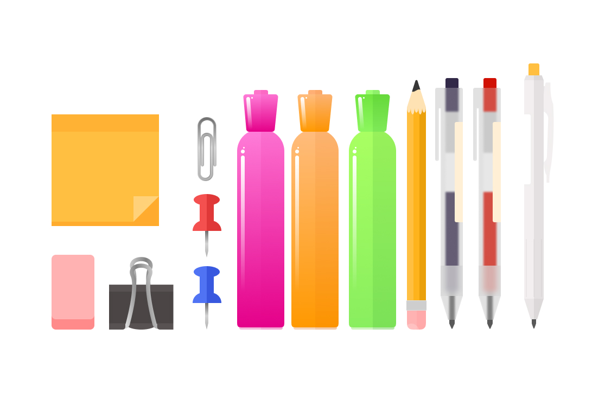

Final Project Process Work
In the feedback sessions with my classmates I was trying to address the issues I was having with the background repeating more than I’d like and to address this most people suggested I use a simpler pattern that is meant to be repeatable to mitigate this issue. So, in my design comps, I created multiple iterations with a simple repeating grid pattern to fix that issue. One of my classmates also suggested that I add more variety to the school supplies that I decorated my page with. As such I designed 9 more graphics that I could sprinkle throughout my design to make it more visually interesting.
